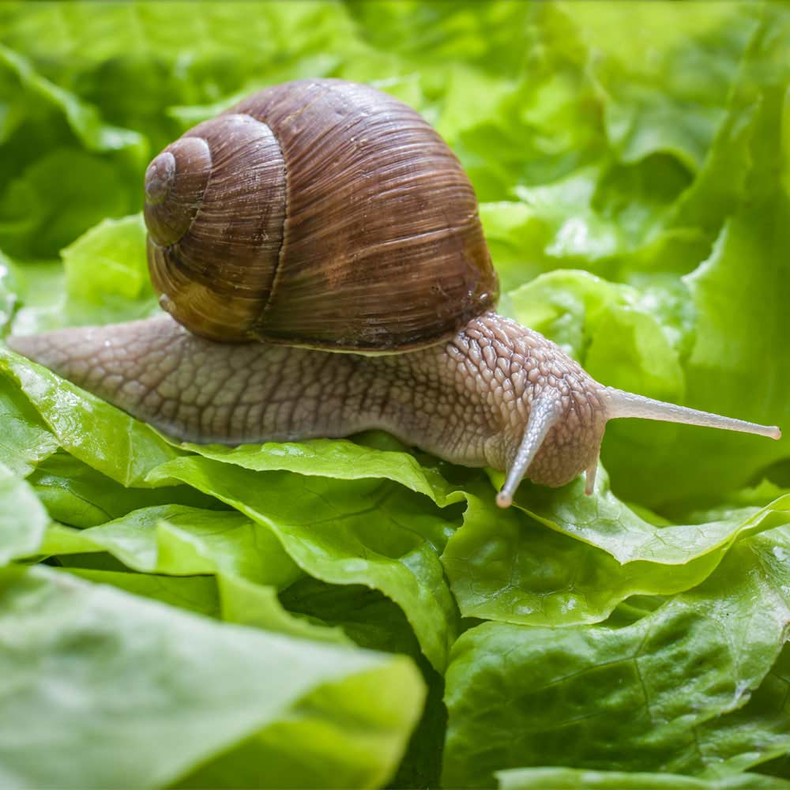

All About Snails

Snails are small, slow-moving animals that belong to a group of animals called mollusks. They are found in many different environments around the world, including forests, gardens, deserts, freshwater ponds, and oceans. One of the most recognizable features of a snail is its shell, which provides protection from predators and helps prevent the snail from losing too much moisture. Although many people picture land snails when they think of snails, there are thousands of different species, each adapted to its own environment.Snails move in a fascinating way. Instead of having legs, they use a muscular organ called a foot to glide across surfaces. The foot produces mucus, which allows the snail to move more smoothly and protects its soft body from rough surfaces. This mucus trail is the shiny path that can sometimes be seen behind a snail. Snails are generally slow because their movement relies on waves of muscular contractions along their foot, but their slow pace does not prevent them from traveling surprisingly long distances over time.
Snails also play an important role in their ecosystems. Many land snails eat plants, algae, fungi, and decaying organic material, helping break down matter and return nutrients to the soil. At the same time, snails are an important food source for animals such as birds, frogs, insects, reptiles, and small mammals. Because they are both consumers and prey, snails contribute to the balance of their environments.
Another interesting feature of snails is their feeding structure. Many species have a specialized tongue-like organ called a radula, which is covered with tiny tooth-like structures. Snails use the radula to scrape food from surfaces. Depending on the species, a snail's diet can range from plants and algae to fungi and even other animals. Their feeding habits make them surprisingly diverse despite their small size.
Although snails are often overlooked because of their size and slow movement, they are remarkably adapted creatures. Their shells, mucus, feeding structures, and ability to survive in different environments have allowed them to exist for millions of years. From the tiny snail in a backyard garden to species living deep underwater, these animals demonstrate how diverse and specialized life can be.
| Snails of the World! | ||||||
|---|---|---|---|---|---|---|
| Species | Habitat | Size | Diet | Shell | Lifespan | Fun Fact |
| Garden Snail | Gardens, forests, fields | 1–1.5 in. | Plants, fruits, fungi | Brown with spiral bands | 2–5 years | Can survive dry conditions by sealing itself inside its shell. |
| Giant African Land Snail | Tropical forests | Up to 8 in. | Plants, fruits, vegetables | Large, brown spiral shell | 5–7 years | One of the largest land snails in the world. |
| Roman Snail | Forests, grasslands | 1.5–2 in. | Plants and fungi | Yellowish-brown | Up to 20 years | Also known as the Burgundy snail. |
| Apple Snail | Freshwater ponds and rivers | 2–3 in. | Plants and algae | Round, yellow or brown | 1–2 years | Lives underwater but can breathe air. |
| Sea Butterfly | Open ocean | Less than 1 in. | Plankton | Small or absent | About 1 year | Uses wing-like structures to swim through the ocean. |